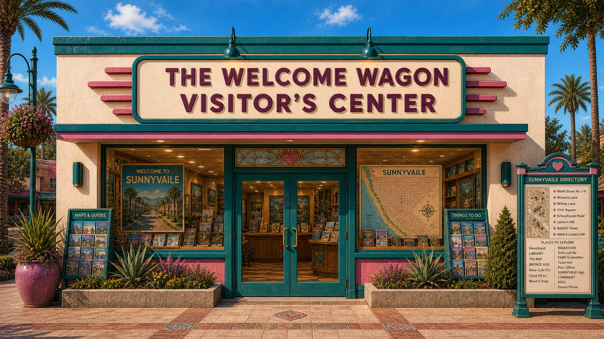
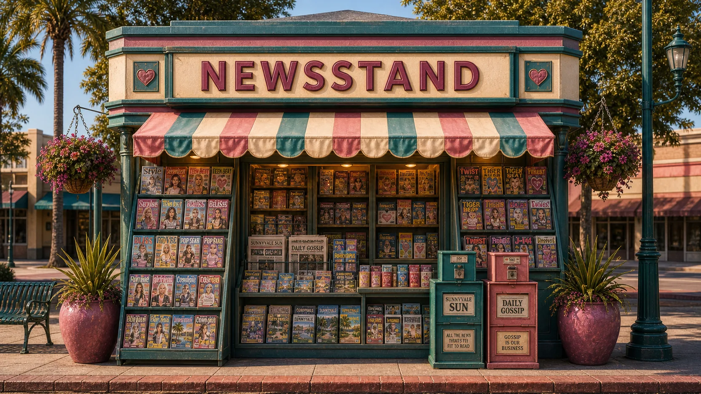
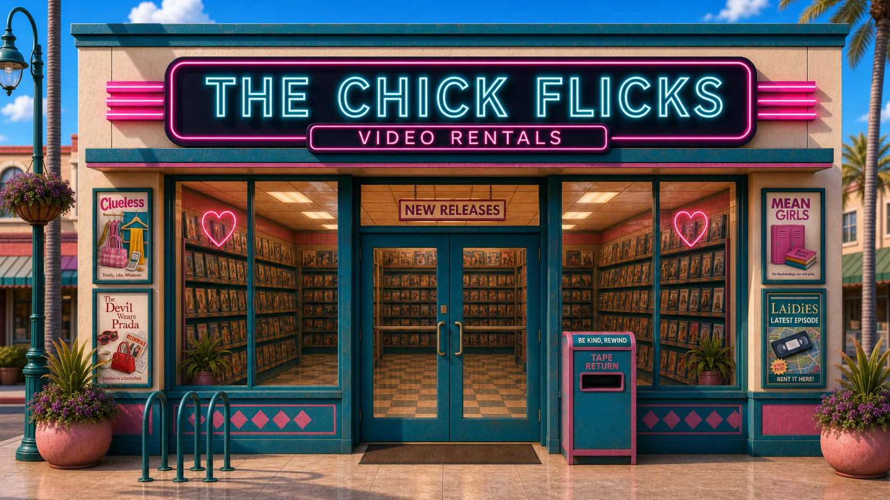
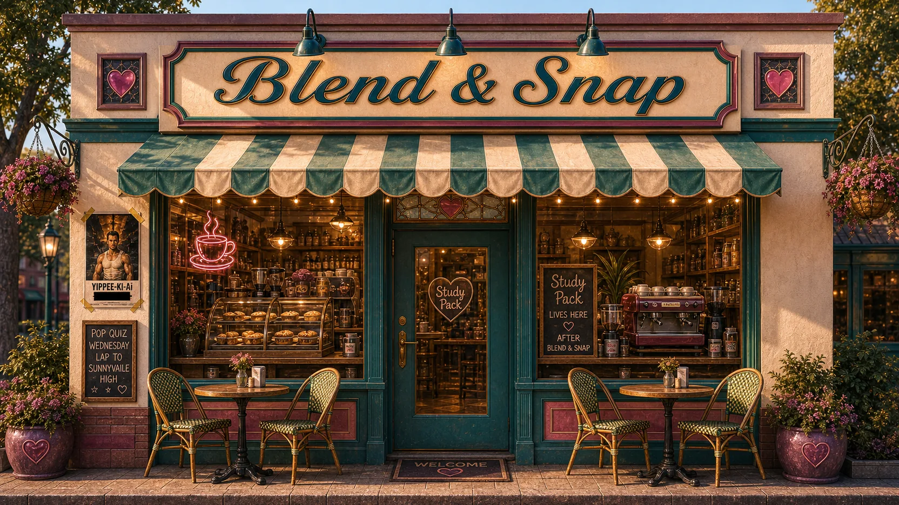
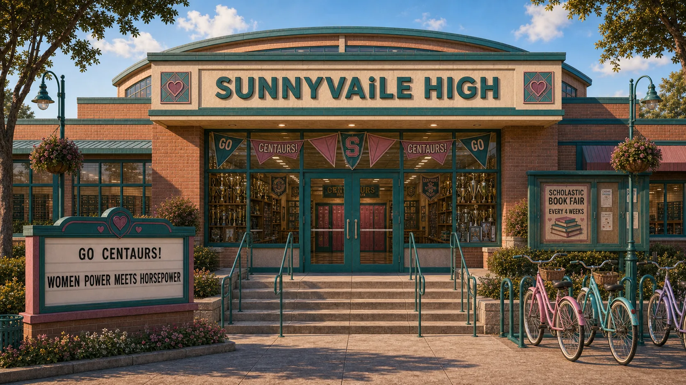
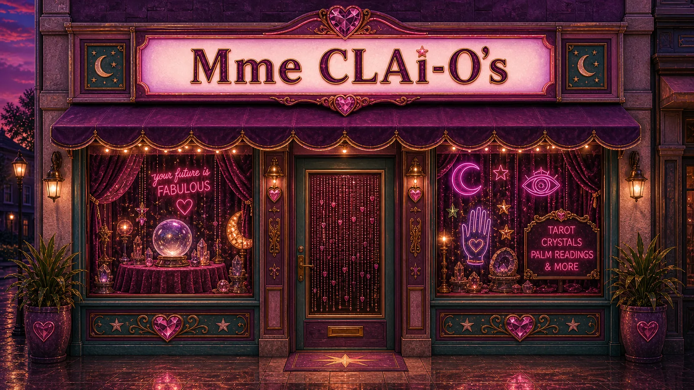
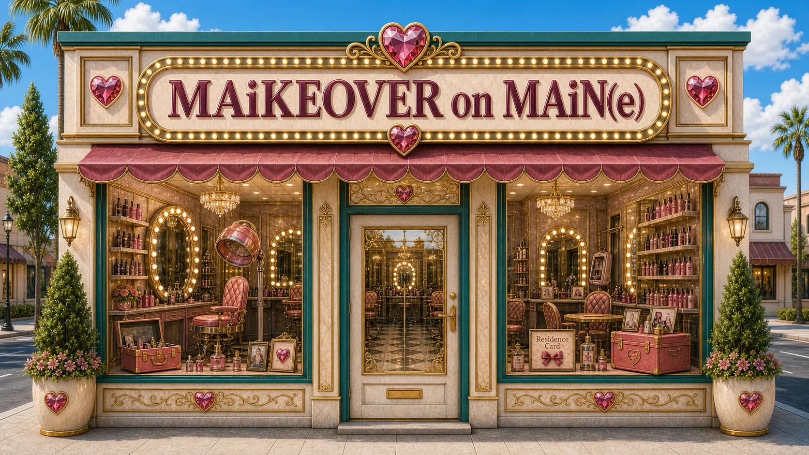
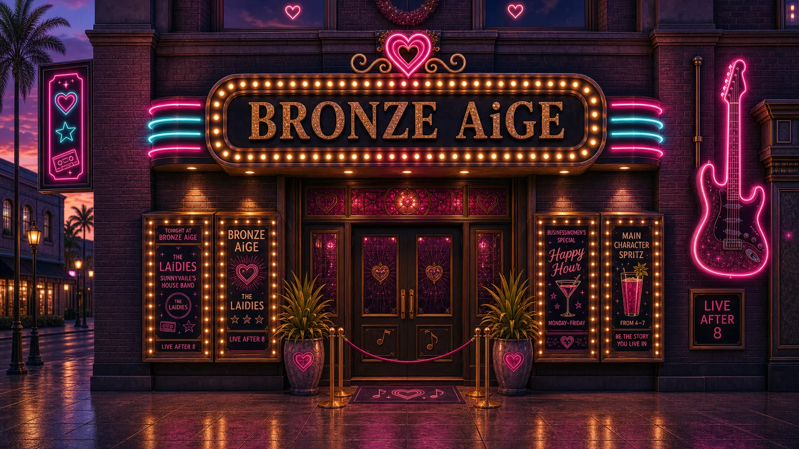
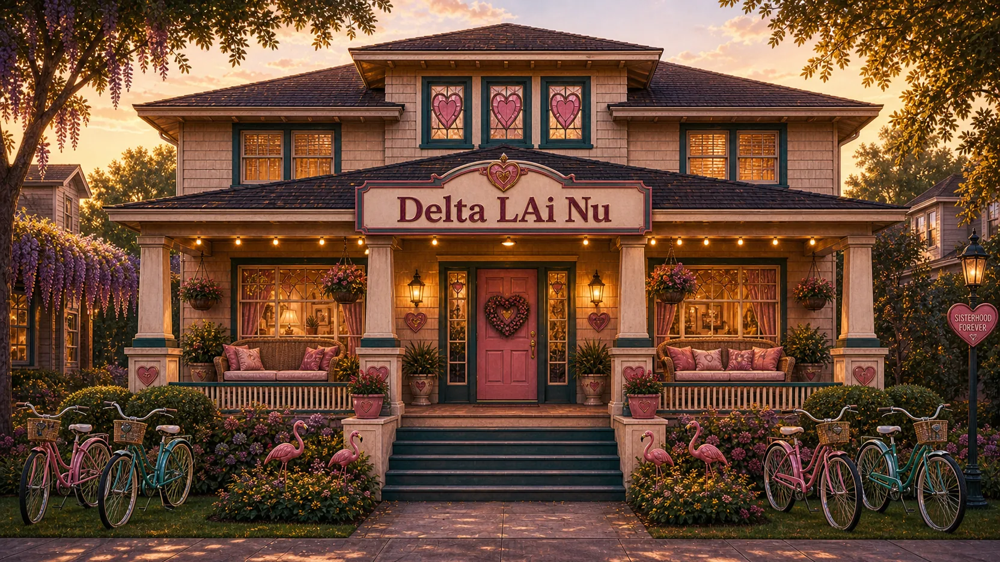
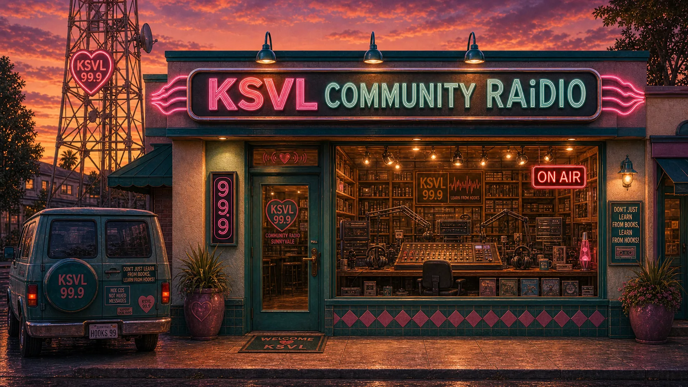

I owe you a tour
Hi. Welcome to LAiDIES. Before the season starts, I owe you a tour.
This is a show about learning AI — made for women who are already smart, already busy, and not remotely interested in a forty-hour course. It works like the TV we grew up on: twenty-four-episode seasons, a new one every Wednesday. Each episode is shorter than your commute, and each one gives you exactly one useful thing — explained the way your sharpest girlfriend would explain it over coffee, with the pop culture you were raised on and none of the jargon you weren't.
I'm your heroine. I can't say that with a straight face either, but the promo guy insists. I'm not an expert — I'm a few steps ahead of you, that's all. I put off learning AI for longer than I'll admit on the record — the full confession is Episode One — and now I'm walking the road one Wednesday at a time and reporting back. I make the mistakes so you can skip them. I do the reading so you don't have to.

So — SUNNYVAiLE. The 90s had Sunnydale, Bayside, and Capeside. Silicon Valley has Sunnyvale. You have sunnyVEIL — that's Sunny v-A-I-l-e. See what we did there? When I finally started learning this stuff, everything about AI looked like a stock photo of a glowing blue brain. And I refused to spend a year of Wednesdays somewhere that ugly. So we built a town instead — set somewhere around nineteen ninety-nine, and furnished with the entire era that raised us. Boy bands and girl groups. Sleepover games. Hair full of butterfly clips. Calling in to the radio station to request a song so you could record it on cassette. The glory days of twenty-four-episode seasons, back when they let you fall in love with the characters before cancelling everything. That era wired us — and it turns out it wired us perfectly for this.
SUNNYVAiLE is where girl power meets machine power.
Analogies that stick, in a fictional town from an era we know and love — that's how we're teaching it. LAiDIES is the show, SUNNYVAiLE is where every episode takes place. And I live here — actually live here. I found this place at eleven p.m. on a Tuesday, looking for something else. Most residents do. My card's in my wallet, my closet's upstairs at the sorority house, and the story you'll hear this season happens in these streets. Every building is a page. Walking in is just clicking. And the town remembers your visits — hold that thought.
The town is the teaching method
Here's what I actually need you to hear. Every episode teaches one concept. The study pack reinforces it. The song turns it into an earworm you can't shake. The pop quiz tests it. The games make you practice it. The community pressure-checks it. Every part of town echoes every other part, on purpose — because when you're busy, that echo is what makes learning stick. We think in analogies and stories; that's not a weakness, it's how AI finally makes sense.
We built a world because worlds work.
What Wednesday actually means
I keep saying Wednesday — because on Wednesdays we do AI, obviously. But let me tell you what Wednesday actually means. A new episode drops every Wednesday, and the town dresses for it: new anthem on the radio, new study pack at the coffee shop, new charms hidden around town. (We might even wear pink.)
But the town itself is open every day of the week, and nothing expires. You can visit any building and do any activity in any order, whenever you want. Start today. Start next month. Go back to Episode One — the tapes stay on the shelf at the rental store forever. Catch up at your own pace, binge a little if you're behind, or slow down and sit with one. Wednesday is when the new thing arrives. Every other day is yours. But if you want to get the most out of SUNNYVAiLE, do one of the weekly tours so the learning really sticks — you might even meet some new friends along the way.
The week's episode, the study pack, the quiz, and the song. The fast lane, for when you're slammed — and it still counts: you bank a Caught Up sticker and a butterfly clip for the jar.
The whole loop through town, tracked by your Tour Guide — it ticks each stop automatically the moment you show up. Finish all eight before next Wednesday and you bank an extra wish with the Fairy Godmother. It's the nineties. Just go with it.
Eight stops, in walking order

Stop one: the NewsStand — first door on Main Street. The week's AI headlines, translated into actual English: what happened, why it matters to your job, no doom, no hype. Plus the bigger themes we're tracking in AI. Five minutes, and you're the informed one in the meeting.

Stop two: the Chick Flicks, our video rental store. Every episode lives here like a tape on a shelf, sorted into genre aisles you can actually browse. Grab this week's — and if you want the full experience, there's a screening room in the back where episodes play with the pictures. It's where you'd take a friend for her first one.

Stop three: the Blend & Snap — the coffee shop, and third on the loop because by now you'll want to sit down. This is where the week's study pack lives: the class notes — a cheat sheet of what the episode taught and what to remember for the quiz — plus this week's trading card pack. Rip it open, flip each card, learn a concept. The pack also hands you the try-on: each week's ten-minute exercise, where you try the lesson on one small, real task from your actual life. If you only do one thing beyond listening, do the try-on. It's why the pack exists. (I write half this show from the corner table.)

Stop four: SUNNYVAiLE High, up Schoolhouse Road. The pop quiz — ten questions on the episode, plus two bonus questions, a couple of minutes, and your score banks butterfly clips in a jar in your closet. Best score counts, so you can always retake. And every four weeks, the gym hosts a book fair. Yes, that kind. Yes, with posters.

Stop five is scheduled free time — my favourite kind of structure. This is when the town shows off. Get your cards read at Mme CLAi-O's; she does walk-ins, and she'll tell you the read, the message, and the move. Pick up the Dream Phone and call somebody in nineteen ninety-nine. Ask the Fairy Godmother anything — she's the town's actual AI assistant, a real one: bring the question, she brings the answer. (And yes — that wish you banked for finishing the Full Tour is spent with her.) Or go hunting: every week, seven charms hide in pictures around town. Spot one, click it, and it's added to the charm bracelet in your closet.

Stop six: MAiKEOVER on Main. This is where you get your SUNNYVAiLE glow-up — your Resident Card. The town's version of a membership, and the two most useful minutes on the tour. It's free. You pick a handle, and from then on the town remembers you: quiz clips, charms, stickers, wishes, tour progress — everything banks. Without a card you're a tourist; things happen, but nothing sticks. With one, you're a resident. And you can come back any week to freshen the card — your favourite saint, your favourite cocktail, your favourite quote.

Stop seven: the Bronze AiGE. Happy hour. The bar serves the Businesswomen's Special — a paper fortune teller, the kind you folded in fifth grade, picks your drink of the week. This is your reminder to book that overdue happy hour with the girls — and we even have tools to make the scheduling and the meeting easy and fun.

Stop eight: the sorority house — Delta LAi Nu, on Wisteria Lane. The rooms live here — our members-only chat, a full hallway of them in three wings. Common rooms, where you post your wins and we cheer. Advice rooms, like Dear Ladies. Creative rooms, where mix CDs get traded and the Burn Book collects what didn't work — we keep receipts on our own mistakes. And the feature of the house: Girl Talk, where you draw a card and take the dare. This is also where the weekly sign-off challenge lands. And upstairs? Your closet — the room where everything you've collected is on display. Your card. Your clips. Your charms. Your luminaries. End the loop there, and admire the shelf you're building.
KSVL · community radio · 99.9

Now — the radio. I saved it because it's my favourite building in town, and because it's not just where the episode songs live. K-S-V-L, community radio, ninety-nine point nine, at the end of Main Street — a full, functioning station. Turn on the live rotation and you get DJ SunnyV between tracks, station jingles, weather and traffic reports for a town that has neither, and commercials for the storefronts you just walked past. The music is real and it's ours: ten house bands — every name is an AI joke you'll start catching around episode six — plus a new anthem every episode, because every lesson here has its own song. Turn it on when you arrive; it follows you from building to building.
"Don't just learn from books. Learn from hooks."
KSVL 99.9 · the town's whole pedagogy in six words
The town rewards snooping
There's more I'm leaving for you to find. The Post Office writes you one letter a week — the episode, the pack, the quiz, the news, and the song, all in one envelope — and it ships gifts too. The Mall sells flair for your card. Town Hall is run by Mayor Deb, who worked at the post office until nineteen ninety-nine, when her coworkers put her name on the mayoral ballot as a joke — she won, and she keeps winning. And up on Lantern Hill, the LUMINAiRY hangs portraits in three wings: the patron saints from the era that raised us, the real-life mavens who built and questioned this field, and the trailblazers shipping the frontier right now. Take the walk. The town rewards snooping. You'll have favourites by Friday.
So remember, ladies…
You don't have to know anything yet. You just have to show up.
See you next Wednesday… in SUNNYVAiLE. Everything you just heard about lives at ladies dot A-i — that's "ladies" with an i in the middle: L, A, i, D, I, E, S.
On the next episode of LAiDIES
Episode 01 · On Wednesdays We Do AI
A man named Steve is called a visionary… and our heroine finally stops putting it off. Tune in next week for Episode One. See you next Wednesday, in SUNNYVAiLE.